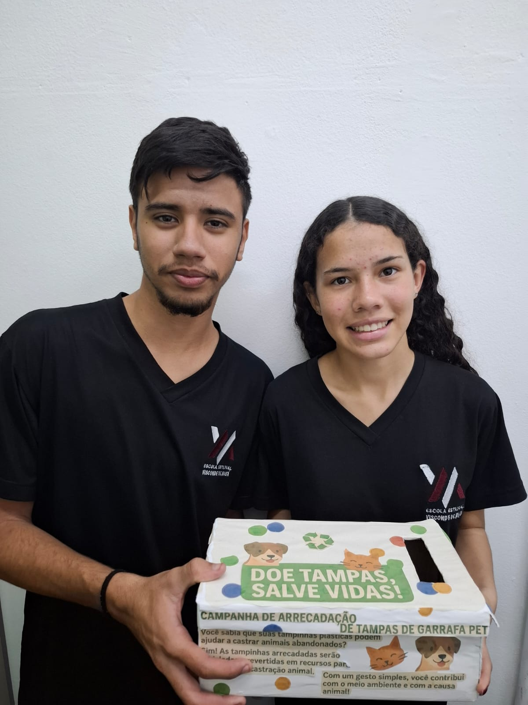

E.E. Visconde de Mauá - Curso Técnico em Logística
Introdução
Este trabalho tem como objetivo analisar a importância da logística reversa
nos diferentes setores da sociedade, com foco em uma campanha específica de
coleta de tampas de garrafas PET. Entre os resíduos mais presentes no cotidiano,
as embalagens PET se destacam devido ao seu elevado consumo e representam
um grave problema ambiental, em razão do longo tempo de decomposição e do
descarte inadequado, que ameaçam os ecossistemas e a saúde pública.
Nesse contexto, a logística reversa constitui uma ferramenta indispensável
para minimizar os impactos ambientais, ao possibilitar o retorno de resíduos ao
processo produtivo ou garantir a destinação ambientalmente adequada desses
materiais. Aplicada a campanhas de coleta de garrafas PET, essa prática não
apenas contribui para a redução da poluição, mas também estimula a
conscientização ambiental e fortalece práticas sustentáveis na sociedade
(GALDINO, 2024).
A campanha analisada neste TCC foi desenvolvida em uma escola, por meio de uma
parceria com a ONG Eu Respeito. Essa organização realiza ações voluntárias de
castração de animais em situação de rua em troca da arrecadação de tampas de
garrafas PET. Essa iniciativa evidenciou a importância da logística reversa,
demonstrando como ela pode contribuir para o descarte correto desses resíduos e
reforçar a responsabilidade social e ambiental da comunidade envolvida. Além de
ampliar o debate sobre o descarte correto de resíduos, a campanha valorizou o papel
da escola como espaço de aprendizagem e transformação social, formando cidadãos
mais conscientes.
Dessa forma, o presente trabalho tem como objetivo geral analisar a
aplicação da logística reversa em campanhas de coleta de garrafas PET, avaliando
sua eficácia na redução de resíduos, promovendo a conscientização da comunidade
sobre a importância da destinação adequada desses materiais e incentivando
práticas de responsabilidade socioambiental. Como destacam Fontes e Moraes
(2023) e o Correio Braziliense (2024), a logística reversa desempenha papel fundamental
para mitigar os impactos ambientais, permitindo que embalagens PET retornem ao ciclo
produtivo ou sejam encaminhadas a destinos ambientalmente responsáveis e
sustentáveis.
Fundamentação Teórica
A implementação do projeto visa unir a sustentabilidade ambiental
e a responsabilidade social, ensinando tanto alunos quanto docentes que o
cuidado com o meio ambiente é dever de todos. A proposta busca integrar
essas duas dimensões por meio de ações educativas que envolvam
diretamente a comunidade escolar. A partir da coleta de materiais recicláveis,
como tampinhas plásticas, o projeto transforma resíduos em recursos
f
inanceiros destinados à compra de ração para animais em situação de
vulnerabilidade. Essa iniciativa promove a conscientização ecológica, o
engajamento coletivo e o apoio à causa animal, reforçando o papel da escola
como agente de transformação social e ambiental, como evidenciado nos
coletores na Figura 1, Figura 2 e Figura 3
Figura 1: Parte superior do coletor de tampinhas
Figura 2: Frente do coletor de tampinhas
Figura 3: Verso do coletor
Para além da educação ambiental, a sustentabilidade exige transformações
nos modelos tradicionais de produção e consumo, que historicamente seguem um
padrão linear baseado no uso e descarte rápido dos recursos. A economia circular
surge como uma alternativa eficaz a esse modelo, promovendo a redução,
reutilização, reciclagem e recuperação de materiais, com o objetivo de prolongar o
ciclo de vida dos produtos e minimizar a geração de resíduos (Aquino et al., 2023).
Esse conceito fundamenta a proposta do projeto, que ao transformar resíduos
recicláveis em recursos para a alimentação de animais em situação de
vulnerabilidade, articula práticas sustentáveis com a promoção da cidadania e o
fortalecimento do engajamento coletivo, evidenciando que ações simples podem
gerar impactos ambientais e sociais significativos.
No entanto, a implementação da coleta seletiva em unidades escolares
enfrenta desafios significativos que vão além da simples instalação de coletores.
Segundo Dantas et al. (2020), a experiência em uma escola pública do sertão
alagoano revelou dificuldades como a baixa conscientização inicial dos alunos e da
comunidade escolar, resistência cultural a mudanças de hábitos relacionados ao
descarte dos resíduos e infraestrutura limitada, com poucos pontos de coleta
disponíveis. Além disso, a falta de continuidade nas ações e a necessidade de um
material didático adaptado à realidade do local evidenciaram que o sucesso do
projeto depende de um trabalho educativo sistemático, que envolva toda a
comunidade escolar e promova o engajamento constante para a manutenção da
prática sustentável.
Como afirma Ceron e Juliane (2023, p. 1) “Uma das soluções mais
prováveis para os problemas ambientais, é a mudança de consciência”. A escola
como órgão a gente de mudanças, e responsável pela formação do pensamento
crítico de futuros membros da sociedade, tem um papel fundamental na percepção
da relação do homem para com a natureza. Portanto é imprescindível a
implementação de projetos que proporcionam essa relação que reconheça o
indivíduo em seu meio natural.
Estudos anteriores realizados em um campus universitário por Santos et al.
(2023) mostram que tanto docentes quanto discentes são incentivados a adotar as
práticas de uma economia circular. Em cerca de quatro meses de projeto, a
universidade já havia obtido contribuições significativas, demonstrando o
engajamento dos frequentadores. Esses dados revelam o potencial transformador
de iniciativas sustentáveis quando há participação ativa da comunidade acadêmica,
evidenciando que a educação ambiental prática pode gerar impactos reais e
mensuráveis.
Segundo a Política Nacional de resíduos Sólidos (PNRS), a logística
reversa é contribuinte para que resíduos sólidos sejam enviadas aos destinos
corretos e aumentem o seu tempo de vida. Essa responsabilidade é de todos,
desde os fabricantes até os consumidores finais, quanto mais visibilidade a
economia circular tiver, mais fácil será a logística que envolve a separação,
catalogação e destinação desses resíduos. Uma das problemáticas se encontra nos
poucos pontos de coleta, e a baixa divulgação de seu trabalho (Waichert et al,
2024).
Assim como a responsabilidade para com o meio ambiente é de todos,
o cuidado para com os animais em situação vulnerável também, como afirma
Barbosa E Dias (2023, p.10), “És responsável por aquilo que cativas”, ou seja, a nós
é imposto o cuidado e zelo pela saúde e bem estar dos animais, principalmente
aqueles sob os quais não estão diretamente sob nossa tutela, como os que sofreram
ou sofrem de violência, abandono , maus tratos ou privação de suas necessidades
básicas, como descrito no Código Penal, Lei Federal º 14.064/20, onde se diz que “é
considerado crime praticar ato de abuso, maus tratos, ferir ou mutilar animais
silvestres, domésticos ou domesticados, nativos ou exóticos” e que “incorre nas
mesmas penas quem realizar experiência dolorosa ou cruel em animais vivos, ainda
que para fins didáticos ou científicos, quando existirem recursos alternativos”.
(Brasil, 1998; Brasil, 2020)
Portanto, enquanto comunidade, temos meios concretos de contribuir para a
mudança de estatísticas alarmantes. Segundo a Organização Mundial da Saúde
(OMS), no ano de 2022, cerca de 30 milhões de animais estavam abandonados nas
ruas do Brasil, e todos eles ficaram suscetíveis à fome, sede, frio e maus-tratos.
Através de iniciativas simples, como a arrecadação de tampinhas, é possível
transformar a realidade desses animais, revertendo parte desses números por meio
do acesso à alimentação. O projeto, ao aliar educação, meio ambiente e causa
animal, torna-se uma poderosa ferramenta de cidadania e transformação social
Discussão dos Dados
Ao analisar os dados coletados no projeto, fica evidente que a logística
reversa não é só um conceito bonito ela tem um papel real e necessário quando o
assunto é sustentabilidade. A coleta de garrafas PET por exemplo mostra como
atitudes simples quando feitas em conjunto conseguem gerar mudanças
significativas. A verdade é que o descarte incorreto desses materiais ainda é um
problema enorme, que contribui diretamente para a poluição de áreas urbanas e
naturais. O que mais chamou atenção foi perceber como ações feitas dentro de
escolas ou faculdades conseguem mobilizar as pessoas. Projetos como a criação de
pontos de coleta de tampinhas PET não só ajudam a diminuir o lixo mas também
despertam a consciência sobre o nosso papel no meio em que vivemos. É
interessante ver como esse tipo de iniciativa envolve as pessoas principalmente os
jovens, que passam a entender melhor a ideia de economia circular.
A Política Nacional de Resíduos Sólidos (PNRS) já aponta que a
responsabilidade de cuidar do lixo é de todos, mas ainda existem muitas barreiras. A
falta de estrutura como poucos pontos de coleta, e a pouca divulgação dessas ações
acabam limitando bastante o alcance dos resultados isso mostra o quanto ainda
precisamos melhorar em políticas públicas e na forma como a sociedade participa
dessas iniciativas outro ponto muito importante do projeto é a parte social.
A ligação entre reciclar tampinhas e ajudar animais abandonados é algo que
amplia a visão do projeto. Não é só sobre meio ambiente é também sobre empatia
ajudar os bichos que vivem nas ruas com ações simples dá um outro significado ao
que estamos fazendo.
Os dados da OMS sobre o abandono de animais só reforçam o quanto esse
problema é sério quando a gente une sustentabilidade com solidariedade o resultado
é muito mais forte. E é por isso que a educação ambiental precisa estar cada vez
mais presente nas escolas, porque ela forma cidadãos mais conscientes, dispostos
a agir de forma responsável com o que está à sua volta.
Em resumo, o que os dados mostram é que a logística reversa, quando ela é
bem aplicada e acompanhada de ações sociais e educativas tem o poder de
transformar e fortalecer projetos assim é um passo necessário para alcançar
mudanças reais que não ficam só no papel, mas que se refletem no dia a dia das
pessoas e no futuro do nosso planeta.
Método
O presente trabalho trata da implementação de um sistema de reciclagem de tampas de garrafas PET em uma instituição escolar, com o objetivo de promover a conscientização ambiental e incentivar a prática da logística
reversa entre alunos,
gestores e demais membros da comunidade escolar.
A iniciativa está alinhada à proposta de “promover a sustentabilidade ambiental e a responsabilidade social com uma atuação que une reciclagem e defesa de animais abandonados” (RECICLA SAMPA, 2022).
A proposta parte da compreensão da realidade alarmante do abandono de animais nas ruas, evidenciada por dados da Organização Mundial da Saúde. Estima-se que existam, apenas no Brasil, mais de 30 milhões de animais abandonados sendo aproximadamente 10 milhões de gatos e 20 milhões de cães.
Em centros urbanos, há um cachorro para cada cinco habitantes, dos quais cerca de 10% encontram-se em situação de abandono. Nas cidades de menor porte, essa proporção pode chegar a um quarto da população humana (JUSBRASIL, 2022). Tais dados fundamentam a urgência de ações voltadas à conscientização e intervenção social e ambiental.
A primeira etapa do projeto consistiu na mobilização da comunidade escolar, promovendo a participação ativa de alunos e gestores na coleta das tampinhas. A escola foi estabelecida como ponto fixo de arrecadação, facilitando o monitoramento dos materiais coletados e ampliando a visibilidade da iniciativa, como demonstrado na Figura 4.
Figura 4: Localização do coletor
A definição e a implementação do método ocorreram internamente, por meio de reuniões com a equipe gestora e divulgação direta junto aos alunos e por meio de cartazes como na Figura 5, realizadas nos períodos da manhã e da tarde.
Figura 5 : Cartaz para a divulgação da campanhar
Os responsáveis pelo projeto organizaram dias específicos para apresentar a campanha com clareza como evidenciado na Figura 6, enfatizando seu caráter social direcionado à arrecadação de recursos para a castração de cães em situação de rua.

Figura 6 : Alunos na divulgação da campanha no período vespertino
A divulgação foi planejada com base em evidências científicas. Segundo estudos publicados nas plataformas PMC e PubMed, crianças e adolescentes são particularmente suscetíveis à influência social positiva, tendendo a adotar comportamentos pró-sociais ao presenciarem exemplos concretos (REDDY et al., 2021). Dessa forma, o foco inicial em alunos de 8 a 11 anos mostrou-se eficaz, gerando resultados significativos em menos de uma semana, com volume expressivo de tampinhas arrecadadas logo nos primeiros dias.
O projeto conta com a parceria de uma empresa especializada em logística reversa, responsável pela coleta e destinação adequada das tampinhas. À escola cabe o fornecimento de um espaço apropriado para o armazenamento dos materiais até o momento da retirada. A empresa parceira realiza a coleta e encaminha as tampinhas para o processo de transformação em novos produtos, garantindo a efetividade do ciclo de reciclagem.
Além da prática de coleta, o projeto visa aprofundar o entendimento teórico sobre logística reversa. Segundo Leite (2013, p. 16), está se referindo à “área da logística empresarial que planeja, opera e controla o fluxo e as informações logísticas correspondentes, do retorno dos bens de pós-venda e de pós-consumo ao ciclo de negócios ou ao ciclo produtivo, por meio dos canais de distribuição reversos, agregando-lhes valor de diversas naturezas: econômico, ecológico, legal, logístico, de imagem corporativa, entre outras”. Com base nesse conceito, o projeto busca integrar teoria e prática, proporcionando aos participantes uma compreensão mais ampla sobre os benefícios ambientais e sociais da logística reversa.
Adicionalmente, a iniciativa enfatiza a importância do descarte correto dos resíduos. Conforme destaca Roxo (2021), “quando o resíduo reciclável é misturado com o resíduo orgânico, impede-se a reciclagem dos resíduos secos e compromete-se o processo de decomposição dos resíduos orgânicos”. Essa reflexão reforça o papel da educação ambiental na formação de uma cultura escolar mais sustentável e comprometida com boas práticas ambientais.
Por fim, serão realizados o acompanhamento e a avaliação contínuos do processo de coleta e destinação das tampinhas, com o objetivo de verificar a eficácia do projeto e realizar eventuais ajustes metodológicos, assegurando sua viabilidade, impacto e continuidade ao longo do tempo.
Impacto social e o papel da educação ambiental
Outro ponto forte do projeto é o lado social. A troca de tampinhas por ajuda a animais abandonados mostra que reciclar também é um ato de empatia. A situação do abandono de animais, segundo a OMS, é muito séria. Juntar sustentabilidade com solidariedade faz o projeto ficar ainda mais completo.
Por isso, a educação ambiental deve estar presente nas escolas, formando pessoas mais conscientes e prontas para cuidar do meio ambiente e da sociedade, como visto na Figura 7. Quando a logística reversa é feita junto com ações educativas e sociais, ela pode transformar de verdade e gerar mudanças reais no dia a dia e no futuro do planeta.
Figura 7 : Aluna contribuindo com a campanha
É muito importante que as empresas tenham a iniciativa de fazer colaborações com escolas, para passar adiante a responsabilidade que temos com nosso meio ambiente, a educação ambiental é a chave para transformar a sociedade e garantir um futuro sustentável.
Considerações Finais
A implementação de um projeto de coleta de tampinhas de garrafa PET no ambiente escolar, com o propósito de converter o material arrecadado em recursos para a castração de animais em situação de rua, demonstrou-se uma iniciativa de grande relevância social, ambiental e educacional. Ao longo do desenvolvimento deste trabalho, foi possível constatar que ações simples, quando estruturadas e integradas à comunidade escolar, podem gerar impactos expressivos.
A prática de recolher tampinhas plásticas, além de promover a destinação correta de resíduos recicláveis, contribui significativamente para a construção de uma cultura de responsabilidade socioambiental. Iniciativas como o projeto Tampinha Legal, que já destinou mais de 1.200 toneladas de tampinhas plásticas a cooperativas e ONGs, comprovam que a mobilização coletiva pode ser revertida em benefícios diretos para a sociedade (INSTITUTO SUSTENPLÁST, 2023).
A aplicação desses recursos para a castração de animais é uma estratégia eficaz no controle populacional, evitando a proliferação de cães e gatos abandonados e contribuindo para a prevenção de zoonoses. Conforme aponta Ferreira (2021), a castração é uma medida de saúde pública e bem-estar animal, que deve ser incentivada por meio de políticas e ações comunitárias sustentáveis
O ambiente escolar, neste contexto, exerce papel fundamental na formação de cidadãos conscientes, críticos e participativos. A Educação Ambiental, quando trabalhada de forma transversal e prática, como neste projeto, estimula o engajamento dos estudantes com causas sociais relevantes, promovendo o protagonismo juvenil. De acordo com Loureiro (2004), a educação ambiental crítica deve “estimular o sujeito a compreender as relações entre os aspectos sociais, políticos, econômicos e ecológicos, favorecendo ações transformadoras”.
Dessa forma, conclui-se que o projeto desenvolvido não apenas contribuiu para a preservação do meio ambiente e o bem-estar animal, mas também promoveu a formação ética e cidadã dos envolvidos. Pequenas atitudes, como a coleta de tampinhas, quando unidas ao engajamento coletivo, têm o poder de transformar realidades e construir uma sociedade mais justa, empática e sustentável.
Na unidade escolar em que o projeto foi desenvolvido, os resultados foram especialmente expressivos. Embora o período vespertino tenha apresentado boa participação dos alunos, foi no turno matutino que se observou maior contribuição. Alunos dessa turma demonstraram forte engajamento, favorecido tanto pela faixa etária quanto pela empatia com a causa, além de uma interação mais ativa nas ações propostas.
Destaca-se ainda o caráter inclusivo da iniciativa, que envolveu alunos com transtorno do espectro autista (TEA), especialmente aqueles com hiperfoco. A atividade de coleta, separação e organização das tampinhas se mostrou altamente benéfica, pois apresentou um padrão repetitivo e concreto, características que favorecem o foco e a participação desses estudantes em ambientes colaborativos.
Em menos de uma semana, a meta inicial de arrecadação foi superada, com um crescimento contínuo nas semanas seguintes. Em menos de dois meses, quase três sacos grandes de tampinhas foram coletados, ultrapassando as expectativas. O projeto teve início em 17 de junho e, em menos de um mês, já apresentava resultados expressivos. As tampinhas arrecadadas foram recolhidas pelos responsáveis da ONG no dia 29 de julho, conforme evidenciado na Figura 8. Esse projeto obteve sucesso demonstrando que, com criatividade, envolvimento da comunidade e protagonismo estudantil, é possível desenvolver soluções eficazes e sustentáveis para os desafios sociais e ambientais.
Figura 8: Recolhimento das tampinhas
Fundamentação Teórica
Os alunos buscaram uma organização não governamental voltada para uma causa social e encontraram a ONG "Eu Respeito", idealizada por Alesandro Martins, um grande amante dos animais. A instituição desenvolve diversas ações em prol dos animais em situação de rua, com destaque para o projeto de castração solidária, que transforma tampinhas de garrafas PET arrecadadas em recursos financeiros. Além da castração, a ONG promove campanhas de adoção responsável, conscientização sobre maus-tratos e cuidados com os animais.
A iniciativa dos alunos também contribuiu para despertar o olhar da escola incluindo estudantes, professores e demais colaboradores para a importância do engajamento em causas sociais. O projeto passou a ser uma ponte entre a escola e a comunidade, mostrando que, com união e propósito, é possível transformar realidades e gerar impacto positivo não apenas no meio ambiente, mas também na vida de animais e pessoas.